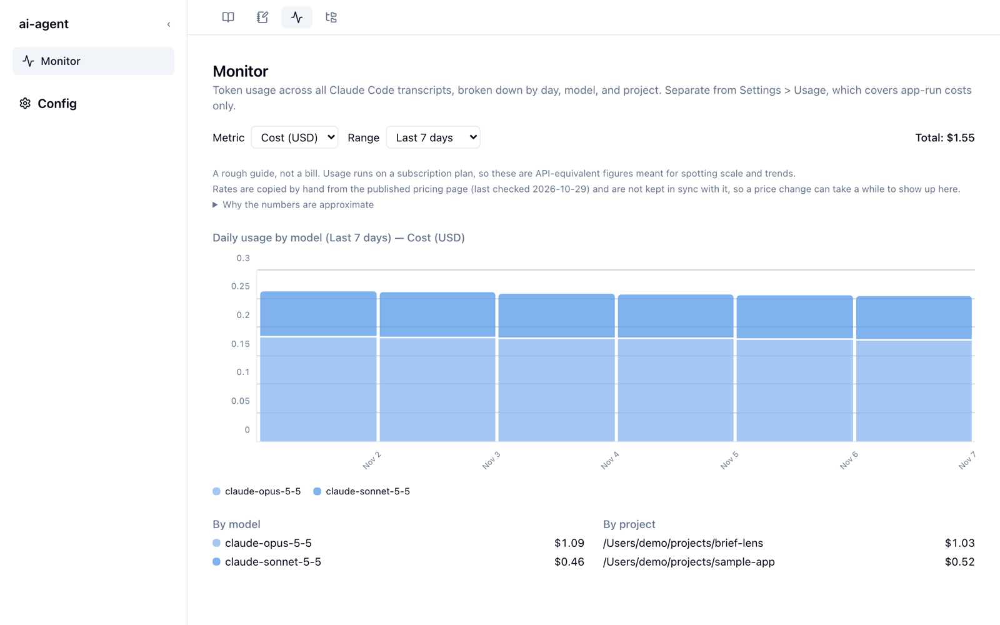
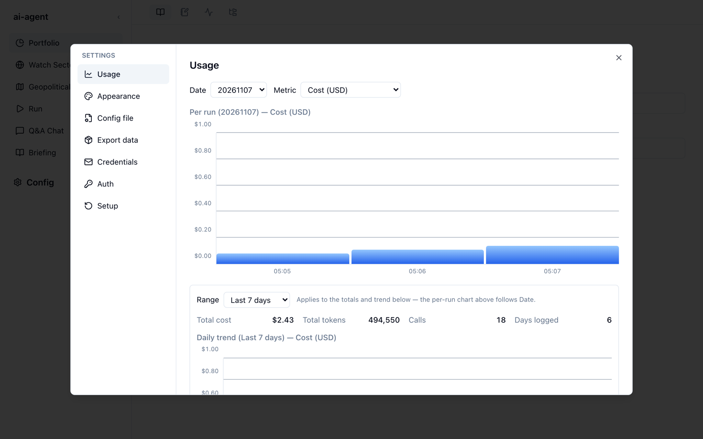

Monitor と Usage
利用量を見る画面は 2 つあります。Monitor はClaude Code 全体の利用量を、Config → Usage はbrief-lens が実行した分だけを表示します。データの出どころが違うので、数字は一致しません。
| Monitor | Config → Usage | |
|---|---|---|
| 対象 | このマシンの Claude Code の利用すべて（ほかのプロジェクトでの作業も含む） | brief-lens のブリーフィング生成やチャットなど、アプリが呼び出した分 |
| データの出どころ | ~/.claude/projects/ にある Claude Code の会話記録 | データの保存場所の log/usage/ |
| 内訳 | 日別・モデル別・プロジェクト別 | 実行 1 回ごと、日別の推移 |
Monitor

- Metric で Cost (USD)（API 換算のコスト）と Tokens（トークン数）を切り替えます。
- Range で Last 7 days / Last 30 days / All time を選びます。右上に期間の合計が出ます。
- グラフはモデル別の積み上げです。下の By model と By project に、期間内の合計が並びます。
請求額ではなく、目安です。
Pro / Max プランは定額なので、ここに出るのは「API で使ったらいくらになるか」を換算した数字です。規模や傾向をつかむために使ってください。単価は公表されている料金表から手で写したもので、料金表の改定がすぐには反映されません。単価が登録されていないモデルは、0 円として合計に混ぜず、Unpriced models (excluded from cost) として別に表示します。
Config → Usage
サイドバー下の Config を開き、Usage タブを選びます。

- 上の Date で日付を選ぶと、その日の実行ごとのコスト（またはトークン数）がグラフになります。
- 下の Range で選んだ期間について、Total cost、Total tokens、Calls（呼び出し回数）、Days logged（記録のある日数）と日別の推移を表示します。
使い方のヒント
- ブリーフィング 1 回あたりのコストの目安は、Usage で生成した日の合計を見ると分かります。
- Monitor の By project を見ると、brief-lens 以外の作業がどれだけ利用量を占めているかが分かります。Pro / Max プランの利用上限に近づいているかを判断する材料になります。
集計の仕組みや単価表の更新方法は、リポジトリの usage-monitoring.md にあります。